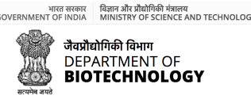
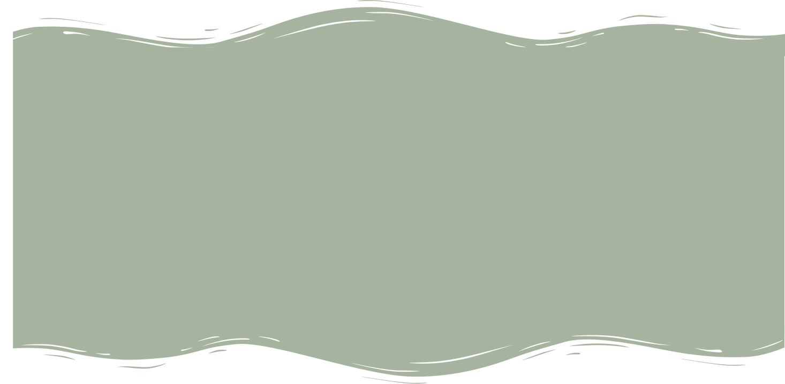
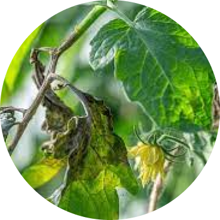
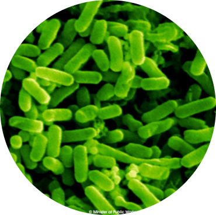
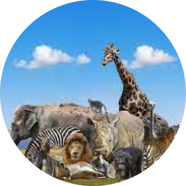
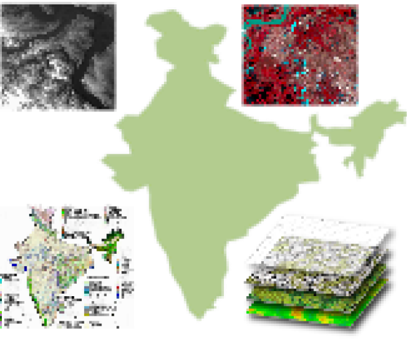
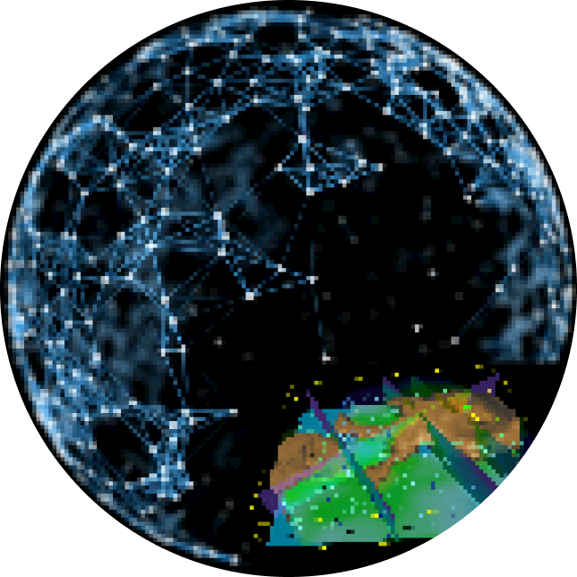
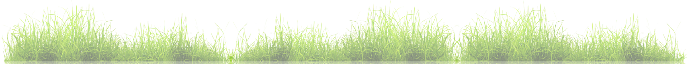

Important Update :
Data curation process is ongoing
011-26400746
ibin@nrsc.gov.in

Home
Species Maps Modeling Data Nodes Contact Us
IBIN
Indian Bio-resource Information Network
(A Multi-Institutional Initiative)
Funded By: Department of Biotechnology.
Species
Spartial
Welcome to
Indian Bio-resource Information Network,
An open access to Indian bio-resources
44150
SPECIES

1984
CHROMOSOMES
281036
IMAGES
20
MAPS
621
CHEMICALS

About IBIN
Indian Bio-resource Information Network (IBIN) is a Department of Biotechnology funded multi-institutional project coordinated by Indian Institute of Remote Sensing (ISRO), Dehradun at national level. It is a single digital window, dedicated to assimilate diverse data sources on India's bio-resources and biodiversity such as plants, animals, marine, microbial resources, and their spatial distribution. It consists of two core nodes viz. Indian Institute of Remote Sensing (IIRS), Dehradun and University of Agricultural Sciences (UAS), Bengaluru. Presently, IBIN portal is operational with nine data partners (data nodes) also known as Bio-resource Information Centres (BRICs)
Aeschynanthus parviflorus
Species Features
Indian Bio-resource Information Network, An open access to Indian bio-resources

Chromista
Unicellular eukaryotes containing chloroplast are the
members of this kingdom. In IBIN we present
Read More

Archaea
IBIN presents comprehensive data of 24 species of archea
present in India constituting 8 families and 17 genera
Read More

Animals
A kingdom with all heterotrophic multicellular eukaryotes.
IBIN presents 14318 species of animals
Read More
Plants
Plantae includes all autotrophic multicellular eukaryotes.
We offer detailed information of 22740 species
Read More
Species Features

Maps
To enhance your understanding of biotic resources and their distribution in the country we present ‘Maps’. This is where you can explore field data of plants and analyse their relationship with multiple spatial layers such as sample plots, vegetation layers, biogeographical zones, forest maps, protected area maps, maps of high altitude plants and medicinal plants etc.
Geospatial Modelling
We present a single platform where you can explore various geospatial techniques designed by domain experts to discover patterns in geospatial datasets. This includes species distribution modelling and decision support system for habitat suitability and conservation and protection decision support system.

Citizen Science
This provides a feature of examining spatial datasets with respect to their species occurrences, which may help users to draw conclusions about the information contained in their point of interest. The analytics is presented in graphical and statistical way through maps and charts.
People’s participation is very crucial for personal and community growth. Therefore we invite general public to download our mobile apps ‘IBIN species watch’ where you can identify species, geo-tag them and upload your observation. & ‘IBIN species loss app which provides users an opportunity to report any hunting, poaching, forest fire, deforestation or any other anthropogenic activities leading to species loss or damage.
Data Analytics
Other Features

Field Guides
Checkout the detailed field guides prepared by a team of
expert to aid the process of species identification and
research projects. Field guides are available for Pathanga
suchaya, Phyllanthus sp. and Rattans sp.

Interoperable Services
We also provide interoperable services to wide range of users.
This gives users a right to invoke a web service for spatial
data, in the form of Open Geospatial Consortium Web Map
Service (WMS).

Ancient Knowledge
Ancient literatures like Vedas are oral complications of wisdom
persevered from the time immemorial. The mention of medicinal
properties of plants in Atharva Veda a source of vast knowledge.
Here you can find shlokas, and hymns from these ancient
literature associated with the species data.
University of Calcutta, Kolkata
North-Eastern Hill University, Shillong
CSIR-Central Institute of Medicinal and Aromatic Plants, Lucknow
The IBIN project was sanctioned with a vision
to"enhance distributed web services, standardize and
authenticate existing datasets adapting global data
standards and integrate advanced analytical and
citizen centric tools to build a single window
national portal on bio-resources and biodiversity of
the country."
INFORMATION
- About IBIN
- IBIN Team
- Other Members
- Privacy Policy
- Copyright
- Disclaimer
Copyright © 2021, IBIN. All rights reserved.

National Cordinator - Dr. Sameer Saran